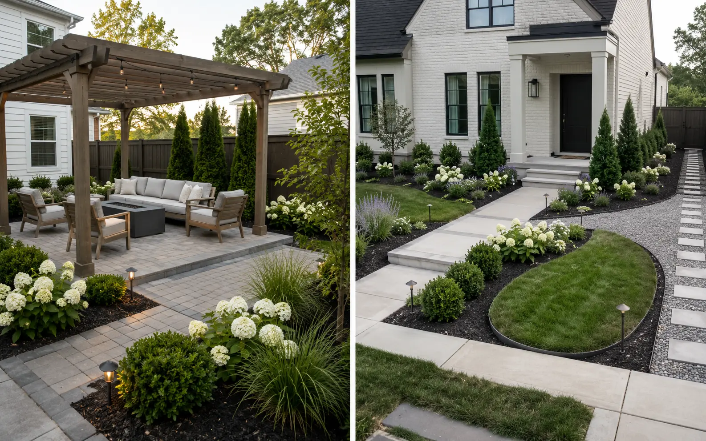
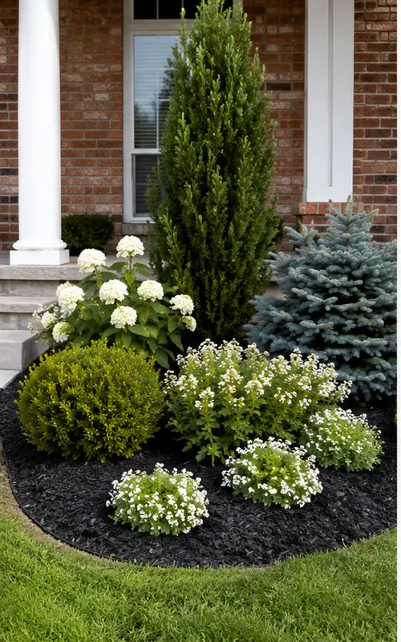
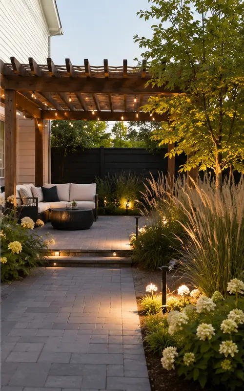
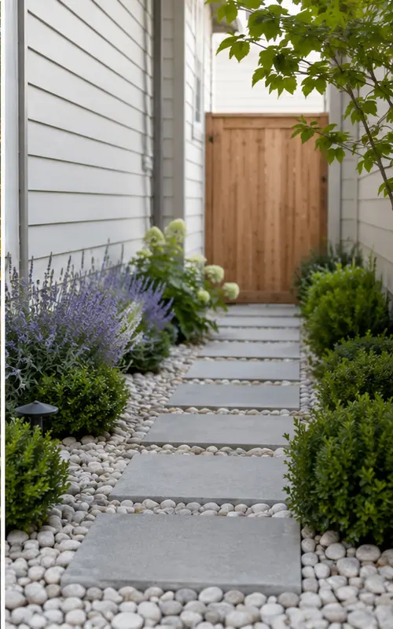
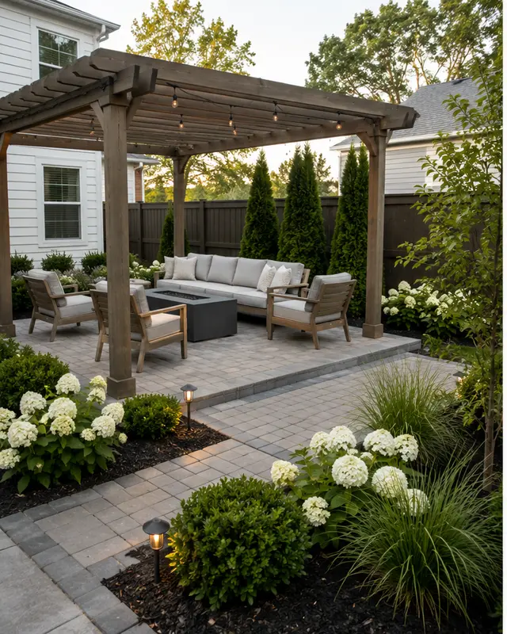
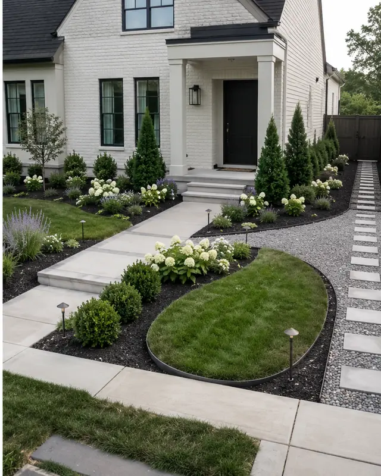
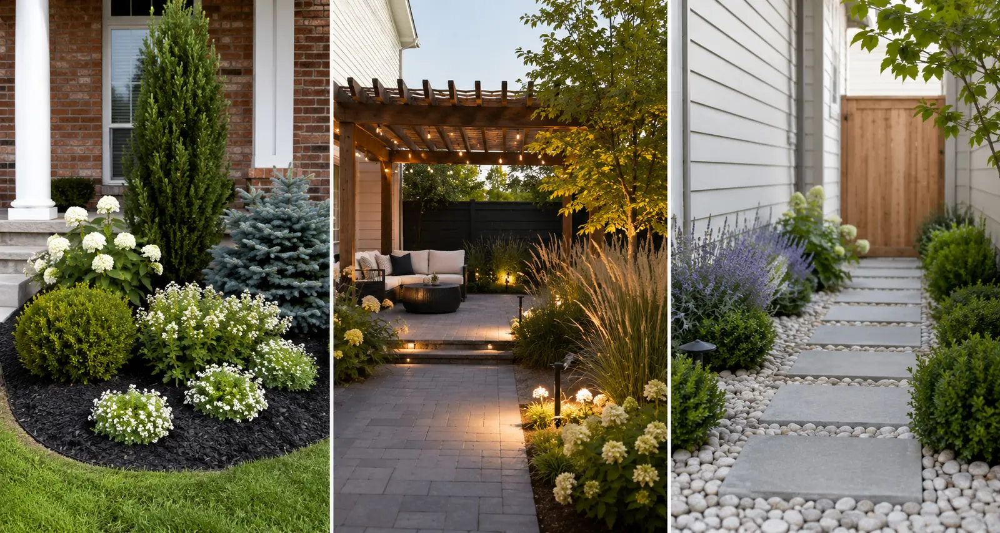

Small focused area
$29–$49
One garden bed, porch corner, mailbox area or narrow entry bed.
2 or 4 conceptsChoose the outdoor area that needs direction. Every service uses photos of your real space to create custom concepts before you buy plants, materials or installation.
All services are remote digital design. No property visit or physical installation is included.

Each card represents a real scope.

Digital Design Concept01 / Front of propertyFoundation beds, entrances, driveway edges and curb appeal.

Digital Design Concept02 / Private outdoor spacePlanting, privacy, seating zones and practical outdoor flow.

Digital Design Concept03 / Focused small areaOne bed, porch corner, mailbox or narrow entry route.

Digital Design Concept04 / Function + gatheringPavers, pergolas, seating layouts and surrounding planting.

Digital Design Concept05 / Connected spacesTwo or more spaces that need one coordinated direction.
The size and complexity of the property should control the package.
$29–$49
One garden bed, porch corner, mailbox area or narrow entry bed.
2 or 4 concepts$89
One medium front yard, backyard or patio—or two directly connected areas.
4 concepts$149
A larger property or several spaces that must work as one design.
Custom scopeThe number of concepts and project scale change by package. The design logic and practical handoff remain consistent.

Typical delivery: 3–5 working days after complete project information.
The package changes the scope and number of concepts. The experience stays consistent.
Clear photos, location, measurements and keep-or-remove notes.
Compare custom directions made for the submitted area.
Select the strongest direction for your style and priorities.
Use the final guidance yourself or with a local installer.
Send your photos first when the scope is not obvious. The package should follow the actual property—not the other way around.
Send Your Project DetailsSend the photos first. The correct service and package should be confirmed before payment.